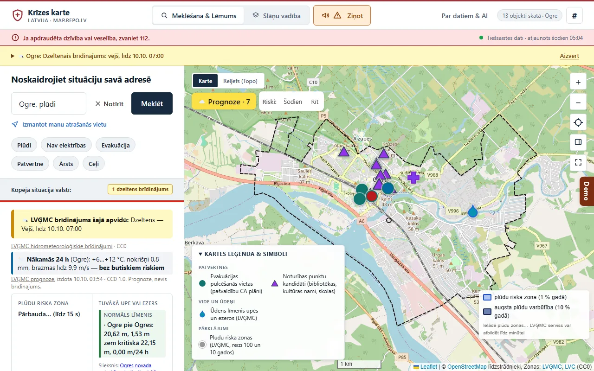
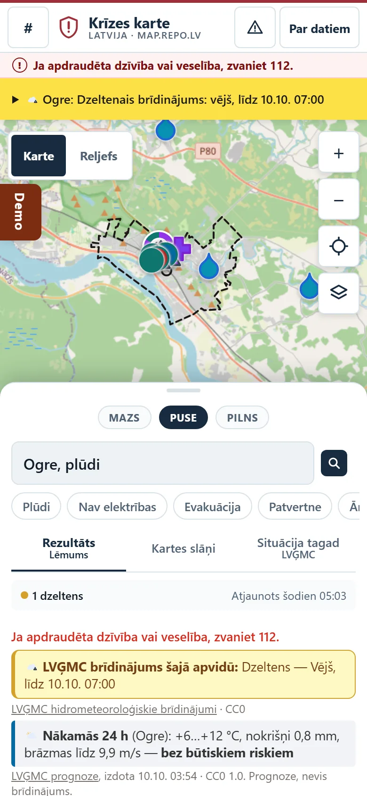
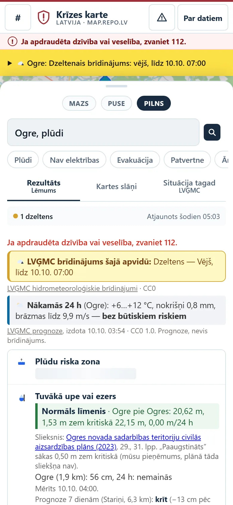
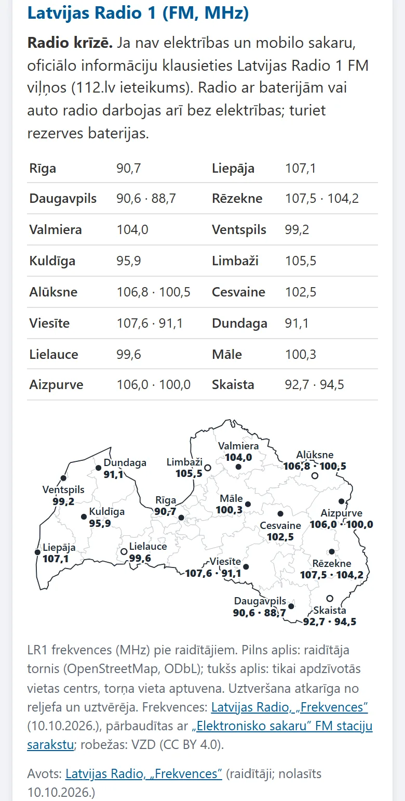

Ar adresi: lēmums pie Jūsu durvīm
„plūdi Brīvības iela 33 Ogre”
- Adresi atrod VZD reģistrs
- Pulcēšanās vieta: 542 m
- Saite uz CA plāna 121. lpp.
- Maršruts vienā pieskārienā


2026. gada 22.–23. augusts · vētra
~260 000
elektrības lietotāju palika bez strāvas.
Kur man iet? Vai mana māja ir plūdu zonā?
Avots: LSM 26.08.2026.; Sadales tīkls (ap 245 000 vienlaikus 23.08.)
Krīzē cilvēks uzraksta vienu rindu telefonā.
„Ogre, plūdi”



„plūdi Brīvības iela 33 Ogre”
„cilvēks nav pie samaņas”
Izklausās, ka apdraudēta dzīvība. Zvaniet 112 tūlīt.
Bez zvana pogām: pasakām skaidri, ko darīt.

Jūrmalas vieta Nr. 10 plānā ir Lietuvā (85. lpp.)

MI rakstīja atslēgvārdus un testus. Atbildi dod pārbaudāmi noteikumi.
| Kritērijs | map.repo.lv |
|---|---|
| 1 · Konkrēts rezultāts | Lēmums: plūdu zona jā / nē, tuvākā vieta ar maršrutu, „zvaniet 112” |
| 2 · Tikai vienreiz | Prasām tikai vietu; adrese no VZD vai GPS, pārējais no 32 avotiem |
| 3 · 3–6 soļi, kopsavilkums | Vieta → vajadzība → rezultāts; kartīte ir kopsavilkums; „Ziņot” ar „Pārbaudiet” |
| 4 · Telefonā, bez strupceļiem | 390 px; GPS liegts → adrese; bez interneta → saglabātie dati |
| 5 · MI un atvērtie dati | MI izvilka 42 plānus un atrada 41 kļūdu; avots un licence katram punktam |
| Dati | Kam pieder | Prasām |
|---|---|---|
| Patvertnes (781) | VUGD | data.gov.lv ar CC0, ietilpība, dzīvais statuss |
| Evakuācijas vietas | 42 pašvaldības | Vienots GeoJSON / CSV, publicēti pielikumi |
| Elektrības atslēgumi | Sadales tīkls | Poligoni un atjaunošanas laiks kā plūsma |
| Mobilie sakari | LMT, Tele2, Bite; SPRK | Bāzes staciju darbība pa novadiem |
| LV-ALERT ziņas | VUGD | Izsūtīto ziņu plūsma un arhīvs |
Visas 30: map.repo.lv/trukstosie.html

map.repo.lv
VARAM / LATA „AI atvērto datu” hakatons 2026 · krīžu vadības virziens